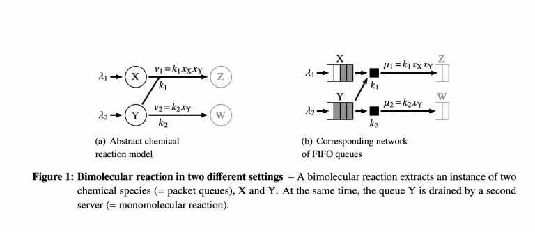
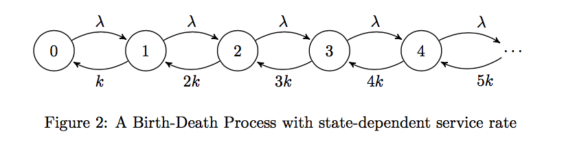
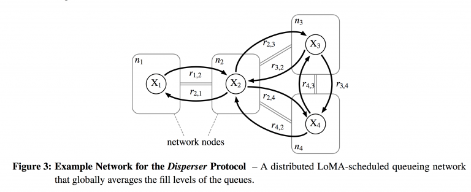
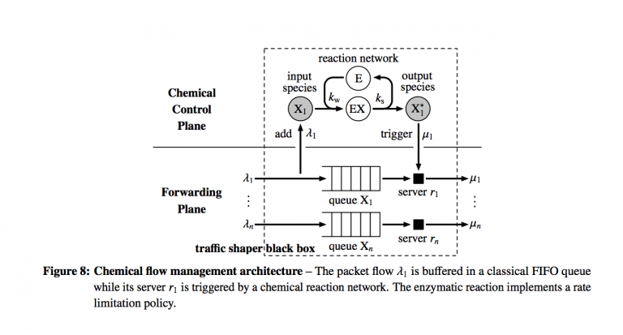
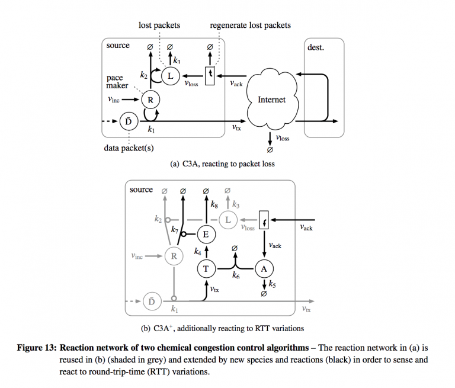
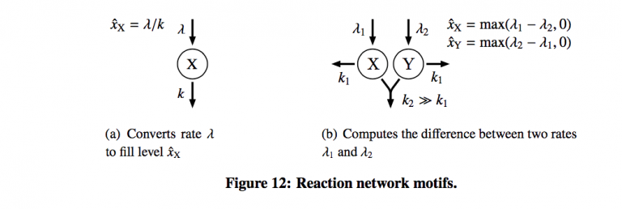

Using Theoretical Chemistry to Engineer Better Packet Flow
C. Traylor
This article reviews a technical report on the application of chemical kinetics to packet flow management in computer networks.
One thing engineers learned long ago was to study the world around them, work with it, and emulate it in their designs. Network engineering should be no different. In a technical report from 2011, authors Thomas Meyer and Christian Tschudin from the University of Basel describe a highly elegant natural flow management method [11] that exploits much of the hard work done in the chemistry sector in chemical kinetics. They describe a scheduling approach that creates an artificial chemistry as an analogue of a queueing network, and uses the Law of Mass Action to schedule events naturally. The analysis of such networks utilizing their implementation is simplified regardless of the depth one wishes to go into. In addition, they show a congestion control algorithm based on this framework is TCP fair and give evidence of actual implementation (a relief to practitioners).
This report will discuss their paper at length with a goal of covering not only their work, but the underlying ideas. Since the paper requires knowledge of chemical kinetics, probability, queueing theory, and networking, it should be of interest to specialists in these disciplines, but a comprehensive discussion of the fundamentals glossed over in the paper would make dissemination more likely.
Overall Review of the Paper
The paper is well written, readable, and quite clear despite the breadth of scope it contains. It's a major benefit to the authors and readers that their theoretical model has been tested in a proof-of-concept network. The work shows much promise for the networking space as a whole.
Overview of the Paper and Chemistry Basics
Just as in chemistry and physics, packet flow in a network has microscopic behavior controlled by various protocols, and macro-level dynamics. We see this in queueing theory as well--we can study (typically in steady-state to help us out, but in transient state as well) the stochastic behavior of a queue, but find in many cases that even simple attempts to scale the analysis up to networks (such as retaining memorylessness) can become overwhelming. What ends up happening in many applied cases is a shift to an expression of the macro-level properties of the network in terms of average flow. The cost of such smoothing is an unpreparedness to model and thus deal effectively with erratic behavior. This leads to overprovisioning and other undesirable and costly design choices to mitigate those risks.
Meyer and Tschudin have adapted decades of work in the chemical and physical literature to take advantage of the Law of Mass Action, designing an artifical chemistry that takes an unconventional non-work-conserving approach to scheduling. Non-work-conserving queues add a delay to packets and have tended to be avoided for various reasons, typically efficiency. Put simply, they guarantee a constant wait time of a packet regardless of the number of packets in a queue by varying the processing rate with fill level of the queue. The more packets in queue, the faster the server processes those packets.
Law of Mass Action in Chemistry
If we have some chemical reaction with reactants $A_{1}$, $A_{2}$,$\ldots$, $A_{n}$ and products $B_{1}$, $B_{2}$, $\ldots$, $B_{m}$, and the reaction is only forward, then we may express the reaction as
$$A_{1} + A_{2} + \ldots + A_{n} \longrightarrow_{k} B_{1} + B_{2} + \ldots + B_{n}$$
where $k$ is the rate constant. (Obviously we can deal with both directions in chemistry to model chemical equilibrium, but only the forward part makes sense for our networking analogue.) In a simple reaction $A \to P$, with $P$ as the product, we can see the rate expressed nicely as an ordinary differential equation [9]:
$$-\frac{\text{d}c_{A}}{\text{d}t} = k\cdot c_{A}$$
This should actually look somewhat similar to problems seem in basic calculus courses as well. The rate of change of draining the reactant is a direct function of the current concentration.
The reaction rate $r_{f}$ of a forward reaction is proportional to the concentrations of the reactants:
$$r_{f} = k_{f}c_{A_{1}}c_{A_{1}}\cdots c_{A_{N}}$$
for a set of reactants $\{A_{i}\}$.
The Queuing Analogue and Assumptions
Meyer and Tschudin[11] express the networking version of these chemical reactions in a very natural way. Packets are molecules. A molecular species is a queue, so molecules of species $X$ go into queue $X$. The molecular species is a temporary buffer that stores particular packets types until they are consumed by a reaction (processed by some server in the queueing space). FIFO (first-in-first-out) discipline is assumed.

The figure above from the technical report shows how a small system of reactions looks in the chemical space and the queuing space. Where analysis and scheduling can get complicated is in the coupled nature of the two reactions. The servers both drain packets from queue $Y$, so they are required to coordinate their actions in some way. It's important to note here that this equivalence rests on treating the queuing system as M/M/1 queues with a slightly modified birth-death process representation.

Typically, in an M/M/1 queue, the mean service rate is constant. That is, the service rate is independent of the state the birth-death process is in. However, if we model the Law of Mass Action using a birth-death process, we'd see that the rate of service (analogously, the reaction rate) changes depending on the fill-level of the queue (or concentration of the reactant). We'll investigate this further in the next sections, discussing their formal analysis.
Related Work and Precedent
The authors noted that adding packet delay is not unheard of in the networking space. Delay Frame Queuing[12] utilizes non-work-conserving transmission at edge nodes in an ATM network in order to guarantee upper bounds on delay and jitter for virtual circuits. Three other researchers in 2008 (Kamimura et al) proposed a Constant Delay Queuing policy that assigns a constant delay to each packet of a particular priority stream and forward other best-effort packets during the delay[8].
Formal Model of Artificial Packet Chemistry
Artificial Chemistry
The notion of an formal artificial chemistry has been around for some time. There is an excellent paper by Dittrich, Ziegler, and Banzhaf that gives a survey of the work in this area[1]. Put simply, an artificial chemistry is a tuple $(\mathcal{S},\mathcal{R},\mathcal{A}) $ where $\mathcal{S} = \{s_{1},s_{2},\ldots s_{n}\} $ is a set of all valid molecules, $\mathcal{R} $ is a set of rules $r $ that describe interactions between molecules, and $\mathcal{A} $ is the reactor algorithm that determines how the set of rules in $\mathcal{R} $ is applied to a collection of molecules termed $\mathcal{P} $. $\mathcal{P} $ may be a reaction vessel, reactor, or "soup" (as Dittrich et al call it). It's also notable that $\mathcal{P} $ cannot be identical to $\mathcal{S} $. The reason given in the paper is that some molecules might be present in many exemplars, but not all.
To expand a bit more, we'll note that the rules $r \in \mathcal{R} $ all take the form
$$s_{1} + s_{2} + \ldots s_{n}\longrightarrow \tilde{s}_{1}+\tilde{s}_{2}+\ldots \tilde{s}_{m} $$
where all $s, \tilde{s} \in \mathcal{S} $. These rules are fairly abstract, and don't explicitly seem to describe just a reactant to product type reaction. These can be collisions or other types of interactions. The set $\mathcal{S} $ of valid molecules presumably can be partitioned into disjoint subsets of different species of molecule as well, though the representation in [1] is more general.
Regarding the reactor algorithm $\mathcal{A} $, Dittrich et al [1] give several different descriptions/approaches by which it can be defined, depending on whether each molecule is treated explicitly, or all molecules of a type are represented by a single number (frequency or concentration):
- Stochastic Molecular Collisions. Every single molecule is worked with, where a sample of molecules from the reaction vessel $\mathcal{P} $ is drawn and the algorithm checks to see if a particular rule $r \in \mathcal{R} $ applies.
- Differential Rate Equations: This approach seeks to describe the dynamics of a chemical system using concentrations of molecular species. The rules under this algorithm take a species approach: $$ r: a_{1}s_{1} + a_{2}s_{2} + \ldots a_{N}s_{N} \longrightarrow b_{1}s_{1} + b_{2}s_{2} + \ldots + b_{N}s_{N} $$
Here, the $s_{i} $'s are species, not individual molecules. The coefficients are stoichiometric factors of the reaction. They are simply indicator functions to denote whether species $s_{i} $ is a reactant or product. That is $a_{i} = 1 $ if and only if $s_{i} $ is a reactant in the rule $r $, and $b_{i} = 1 $ if and only if $s_{i} $ is a product in the rule $r $. It is this form of $\mathcal{A} $ that Meyer and Tschudin [11] utilize in their packet chemistry.
The change of overall concentration (concentration denoted $c_{s_{i}} $) is given by a system of differential equations
$$\frac{\text{d}c_{s_{i}}}{\text{d}t} = (b_{i}-a_{i})\prod_{j=1}^{N}c_{s_{j}}^{a_{j}}, \quad i=1,\ldots,N $$
according to the Law of Mass Action discussed earlier. There may be multiple rules/reactions $r \in \mathcal{R} $ that affect the concentration of species $s_{i} $, so
$$\frac{\text{d}c_{s_{i}}}{\text{d}t} = \sum_{r\in \mathcal{R}}\left[(b_{i}^{r}-a_{i}^{r})\prod_{j=1}^{N}c_{s_{j}}^{a_{j}^{r}}\right], \quad i=1,\ldots,N $$
-
Others: There are other options, such as metadynamics (where the number of species and thus differential equations may change over time), mixed approaches, or symbolic analysis of the differential equations. As this article would be far too cumbersome to discuss these, they are omitted, but may be found in [1].
According to Dittrich et al [1], the reactor algorithm $\mathcal{A} $ depends on the representation of the elements of $s_{i} $ and thus the population. Meyer and Tschudin [11] utilize the second approach, though they do not explicitly state this.
Artificial Packet Chemistry
Meyer and Tschudin adapt the artificial chemistry in the previous section to suit their queuing networks in a given computer network. They add an element $\mathcal{G} $ to the artificial chemistry tuple to get an artificial packet chemistry $PC = (\mathcal{G},\mathcal{S},\mathcal{R},\mathcal{A}) $, where $\mathcal{G} $ is the digraph that gives the topology of the computer network. $\mathcal{G} $ consists of a set of nodes $V_{\mathcal{G}} $ which represent the chemical reaction vessels. (These were the $\mathcal{P} $ in the previous section.), and $E_{\mathcal{G}} $ is the set of directed arcs that represent network links connecting adjacent nodes. (That is, if flow between nodes can happen in both directions, they will be represented by two arcs. One going in one direction, one in the other.)
Here, since a molecular species is the analogue of a queue, $\mathcal{S} = \cup_{i \in V}\{S_{i}\} $. Here, $\{S_{i}\} $ is a set of all queue instances in a particular node $i $. At this point, some discussion on clarity is warranted. It is possible to have more than one queueing instance (more than one molecular species) inside each reaction vessel (here the nodes of the network). I don't think this is meant to be a disjoint union, since a reaction species can show up in more than one reaction vessel, so there may be repeats of certain species in this representation of $\mathcal{S} $ when written this way. Perhaps it's just a nitpick, but it's worth mentioning.
$\mathcal{R} = \cup_{i \in V}\{R_{i}\} $ gives all the flow relations among the queues. Here the rules $r $ take form 2 of $\mathcal{A} $:
$$r \in R_{i}: \sum_{s \in S_{i}}a_{s,r}s \longrightarrow \sum_{s \in S_{i} \cup \{S_{j}\} : j \in N_{i}}b_{s,r}s $$
The reaction rules basically describe what's going on in a particular reaction vessel. We can send packets to neighboring nodes/vessels ( $N_{i} $ is the notation for the neighborhood of node $i $, or the set of adjacent nodes), or we can keep packets in the same node after the reaction is done. The reactions that send packets to neighboring nodes are transmissions.
The mean reaction rate $\nu_{r} $ of each reaction is given by the Law of Mass Action as applied to forward reactions:
$$\nu_{r} = k_{r}\prod_{s\in S}c_{s}^{a_{s,r}} $$
just as described in the previous section.

Figure 3 from Meyer and Tschudin [11] gives an explicit example to help solidify these abstract ideas. The network consists of 4 nodes, so $V = \{n_{1}, n_{2}, n_{3}, n_{4}\} $. Each node has a bidirectional link with its neighbors, so $E = \{n_{1}n_{2}, n_{2}n_{1}, n_{2}n_{3}, n_{3}n_{2}, n_{2}n_{4}, n_{4}n_{2}, n_{3}n_{4}, n_{4}n_{3}\} $. In this case, we only have one species of molecule (one queue) per node, so $\mathcal{S} = \{X_{1}, X_{2}, X_{3}, X_{4}\} $. The set of reactions is simply a first-order reaction per arc: $\mathcal{R} = \{r_{a,b}: X_{a} \to X_{b}: ab \in E\} $
From a review standpoint, I would have liked to see a less trivial example, such as one with multiple queues in a node, and rules that may keep packets in a node instead of just transmitting. These types of scenarios would be interesting to model this way, and demonstrate better the power of this approach.
Formal Analysis of Artificial Packet Chemistry
By representing packet flow in a computer network as an artificial chemistry, a multitude of analyses are available, from high to low granularity. The authors give a heavily brief survey (and a good bibliography) of works that can be utilized to analyze these networks pulled from the physics and chemistry literature. A particular advantage of this method is the ability to study the transient states of the network rather than just steady states. The authors also claim the ability to determine the stability of the network flow based only on topology, a heavy advantage in design.
Stochastic Analysis at the Microscopic Level
The stochastic behavior of chemical reaction networks is described by the chemical master equation[10] which takes the form
$$\frac{\text{d}\mathbf{P}}{\text{d}t} = \mathbf{A}\mathbf{P} $$
which is a differential equation describing the evolution of state probabilities for a system. Here the states are discrete, and time is continuous. The matrix $\mathbf{A} $ describes the transition rates (which can also be kinetic or reaction rates), and the stochastic process described is a Markov jump-process. Since we're on a network, the Markov jump process exists in an $\mathcal{S} $-dimensional integer lattice. Some work has been done to analyze several classes of chemical reaction networks to find the steady-state probability distribution of the state space. For example, if the total number of packets in the network has a bound, and the network contains only first order (unimolecular to unimolecular) reactions, the steady state probability distribution for the lengths of the queues in the network is a multinomial distribution[3]. On the other hand, if the network is open (we allow packets to exit the network completely), then the steady state probability distribution of the lengths of the queues follows a product of Poisson distributions (which is also Poisson)[3]. (This is an extremely desirable property, called a product-form.)
Deterministic Approximations
This is the most common approach utilized in computer network analysis today, simply because networks are so large and complex that stochastic modeling becomes too cumbersome. Here, the average trajectory is represented by a system of ordinary differential equations, building a fluid model. One downside to this in the networking space is that the analysis of protocols by this method requires manual extraction from source code and accuracy is uncertain.
In the chemistry sector (and now in the packet chemistry model), obtaining a fluid approximation is not only easier, but shown to be accurate. There are links between the stochastic master equation to several approximations[5,6] including a deterministic ODE model. Gillespie[5] showed that the ODE model accurately predicts the network flow trajectory in many cases.
One thing the authors note here is that the ODE model can be directly and automatically generated from the network topology. For example, a single server with a single queue (M/M/1) is simply modeled as one chemical species $X $. The arrival rate (inflow) is $\lambda $, and the service rate is proportional to the queue length, so $\mu = kx $, where $x $ is the queue length. Then we get a simple differential equation
$$\dot{x} = \lambda-kx $$
describing the change in queue length as the difference of inflow and outflow. In the steady state, $\dot{x} = 0 $, which lets us look for a fixed point $\hat{x} = \frac{\lambda}{k} $. This is the steady-state queue length, which allows us to derive the expected waiting time $T = \frac{1}{k} $, showing that the latency of a packet under this model is independent of the arrival rate and fill level. This model when implemented automatically adjusts the service rate such that in the steady state, every packet sees the same latency.
It's also important to determine just how stable this steady state is by analyzing the sensitivity of the network and states to perturbations. The authors list several citations to show that no new approaches are needed to do this; one can look to signal and control theory literature. In particular, a network designer would desire to predict the stability of a complex network by studying the topology as opposed to an analysis of the system of ODEs. Fortunately, modeling a network this way allows for the use of the Deficiency Zero Theorem for complex chemical networks that gives conditions for stability of steady-state[2,7].
The authors give a formal convergence proof that the example network above converges to a stable fixed point and is asymptotically stable, comparing it to the proof of a similar protocol Push-Sum(a gossip protocol in computer networks).
Implementation of a Scheduler Based on the Law of Mass Action
Likely, this section will be of greatest interest to network engineers. The authors have indeed designed and implemented a scheduler that utilizes this approach in an elegant fashion. In addition, they discuss a "chemical control plane'' that can automatically be compiled from the abstract model. In another application, they relax the static nature of the network to allow an active networking approach that reshapes the queuing network at run-time. The authors do discuss specifics of implementation, though this article will only briefly touch on it.
Scheduler
Each network node/reaction vessel has its own scheduler. The scheduler computes the next occurrence time of each rule $r \in R_{i}$ in its local node (this is equivalent to "serving'' or processing a packet or set of packets for bimolecular reactions) according to the Law of Mass Action. It then will sort the events into a priority queue, wait until the first event occurs, then execute. The main difficulty for a scheduler is to dynamically react and reschedule events properly as packets are added to or drained from its queues. The authors note that an efficient mass action scheduler can be implemented that requires only $O(\log(|\mathcal{R}|))$ time to enqueue or dequeue packets. This is based on the Next Reaction Method[4] of Gibson and Bruck.
Here we'll recount an explicit example that illustrates the concept. If we return to Figure 1 reproduced below, we can walk through Meyer and Tschudin's scheduler implementation.
There are two queues, $X$ and $Y$. Reaction 1 (Server 1) is bimolecular: $X+Y \rightarrow Z$, so the server pulls packets from two queues to execute the service. Reaction 2 (Server 2) is unimolecular, pulling only from queue $Y$. If we assume the reaction constants $k_{1} = 1000/(\text{packet}\cdot s)$ and $k_{2} = 1000/\text{s}$, that $X$ begins with two packets in its queue, and $Y$ begins with 3 packets in its queue, then the reaction rates $\nu_{r}$, $r=1,2$ are respectively $\nu_{1} = k_{1}c_{X}c_{Y} = 1000\cdot 2 \cdot 3 = 6000$ and $\nu_{2} = k_{2}c_{Y} = 1000\cdot 3 = 3000$. The occurrence time is the reciprocal of the reaction rate, so the occurrence times $\tau_{r}$ are respectively $\tau_{1} = \frac{1}{6} ms$ and $\tau_{2} = \frac{1}{3} ms$. That means the first server executes its action first, extracting packets from both $X$ and $Y$.
Since the occurrence time of $r_{2}$ is coupled with $r_{1}$ (both servers pull from queue $Y$), the action of $r_{1}$ requires a rescheduling of $r_{2}$. After $r_{1}$ pulls a packet each from $X$ and $Y$, there is 1 packet left in $X$ and 2 in $Y$, which means we have to recalculate the rate $\nu_{2} = 1000\cdot 2 = 2000$. The occurrence time of $r_{2}$ is at ms $\frac{1}{3}$, so its time of execution hasn't arrived. But thanks for $r_{1}$'s effect, we have to rescale and reschedule the occurrence time of $r_{2}$. This is done by the following:
$$\tau_{r,\text{new}}-\frac{\nu_{r,\text{new}}}{\nu_{r,\text{old}}}(\tau_{r,\text{old}}-t_{\text{now}}) + t_{\text{now}},$$
where $(\tau_{r,\text{old}} -t_{\text{now}})$ is the time remaining between the original execution time and the current time. The multiplier in front is a scaling effect.
In this example, at $t_{\text{now}} = 1/6 ms$, $r_{2}$ was supposed to go at time $1/3 ms$, but will now be prolonged.
A note here, I did the math for their specific example, and it seems off. I think the multiplier should be as I've written above. The authors wrote the reciprocal, which prolongs too far.
There are other timed scheduling algorithms utilized in computer networking, such as Earliest Deadline First, which require tagging each packet with a timestamp. This scheduler does not require such an imposition.
The Chemical Control Plane
Here, the authors describe what they term as a chemical control plane that is intended to avoid the messy necessity of sending packets through a complex queueing network in order to shape packet flow as desired. The control plane takes advantage of concepts in enzymatic chemical reactions in order to control flow. This is a different application than the flow networks discussed thus far (as I understand it).

Here the forwarding plane which executes actions is separated from the control plane which will shape the flow of packets in the forwarding plane.
The chemical control plane will dynamically determine the service rates; the servers do not have them predefined. There are some number of FIFO queues $n$, one for each type of ingress packet flow and they are drained by one server each, representing a unimolecular reaction. In the control plane, each queue is represented by an input species $X_{i}$ and product species $X_{i}^{*}$. The chemical reaction network lives abstractly in the control plane, which is designed by a traffic engineer and can look like any digraph or network he wishes.
Here we note the difference here between the prior sections, which dealt with physical flows modeled by a chemical reaction network, and moving the chemical reaction network to an abstract control plane. The queues now are not necessarily physically linked together, but we can choose to couple them abstractly to shape traffic.
When a packet physically enters one of the queues, the control plane injects one instance of the corresponding molecule species into the abstract network. The scheduler described previously is implemented and eventually an instance of the output species is generated. Once this happens, the corresponding server in the forwarding plane physically processes the packet and dequeues the next. The advantage here is that the abstract molecules in the control plane have no payload, so implementation of this model only requires storing an integer value for each species that keeps track of the number of packets in each queue. This allows analysis of behavior at the design phase.
In the simplest case, a unimolecular reaction $X \to X^{*}$ in the chemical control plane acts like a low-pass filter to the packet flow, smoothing bursts with high frequency components. If the differential equation $\dot{x} = \lambda-kx$ that approximates a unimolecular reaction is converted to the frequency domain via the Laplace transform, the transfer function $F(s)$ has a cut-off frequency at $k$, the reaction constant:
$$F(s) = \frac{\mu(s)}{\lambda(s)} = \frac{k}{s+k}$$
That is, higher-frequency flows will be attenuated, much like dark glasses do with sunlight. Applying this filter at an ingress point of a network leads to less chaotic traffic patterns, but with a cost of a delay $\frac{1}{k}$ and memory to buffer the packets. Therefore, the mean queue length for this single queue will grow proportionally with the delay and flow rate. That is, $\hat{x} = \frac{\lambda}{k}$.
Another consideration of the LoMA queues described by Meyer and Tschudin that differs from the standard M/M/1 queuing models is that the service rate is ultimately unbounded (for infinite capacity queues/networks), since it is proportional to the queue length. This is undesirable to allow in a network, and thus the authors borrow from biological systems and design an abstract enzymatic reaction to limit the rate of packet flow.
In biological systems, enzymes bind to reactant molecules X, called substrates in order to prevent a particular molecule from reacting immediately. Some amount of enzyme molecules E exist, and they can either exist free-form or bound in a complex (EX). The more enzyme molecules in bound form, the slower the rateof transmission grows for an increasing arrival rate. At equilibrium, the influx and efflux of substrate-enzyme complex molecules are equal according to Kirchoff's Law, so
$$k_{w}c_{X}c_{E} = k_{s}c_{EX}$$
Take a look at Figure 8 above in the chemical control plane to see this action. The number of enzymes is constant, so $c_{E} + c_{EX} = e_{0}$, which yields the Michaelis-Menten equation, expressing the transmission rate $\mu$ in terms of the queue length $c_{X}$.
$$\mu = \nu_{\max}\frac{c_{X}}{K_{M} + c_{X}},$$
which yields a hyperbolic saturation curve. $\nu_{\max} = k_{s}e_{0}$, and $K_{M} = \frac{k_{s}}{k_{w}}$ and specifies the concentration of $X$ at which half of $\nu_{\max}$ is reached.
When the queue length at queue $X$ is high, the transmission rate converges to $\nu_{\max}$, and behaves like a normal unimolecular reaction when queue length is short.
The authors also extend this model to handle dynamic changes to the topology of the queuing network, which means that instances of queues and flow relations can be generated "on the fly,'' as it were. Tschudin[13] has created an executable string and multiset rewriting system called Fragletsthat allow for the implementation and running of protocols based on the ideas put forth thus far. They describe in the paper how to implement explicitly the enzymatic rate-limiter in the chemical control plane in Figure 8. In this implementation, rather than flow interactions being static and determined at the design phase, each fraglet (packet) sorts itself into a queue. After a packet is serviced, the header of a fraglet is treated as code, allowing a packet to determine its route comparable to active networking. The relationship between the abstract model and execution layer remains, which allows a mathematical model of the behavior of a Fraglets implementation to be generated automatically, and a queuing network to be design and then realized easily in Fraglets language.
Chemical Congestion Control Algorithm

As a final application of chemical networks, the authors combine LoMA-scheduled queues and flow-filtering patterns to schedule segments of a transport protocol to control congestion. To illustrate, they re-implement the additive increase/multiplicative decrease of the congestion avoidance mode of TCP-Reno. The congestion control algorithm reacts to packet loss automatically and naturally.
The reproduced figure above shows how the chemical congestion control is implemented as a chemical reaction network (and by extension, a queueing network).
- Arriving packets are put into a queue $D$. The transmission rate $\nu_{tx}$ is controlled by the quantity of pacemaker molecules $R$, so $\nu_{tx} = k_{1}c_{R}c_{D}$, once again according to the Law of Mass Action. To mimic the additive (linear) increase mechanism of TCP-Reno, the number of pace-maker molecules is increased at a rate $\nu_{\text{inc}}$.
- Before packets are transmitted, they are tagged with a sequence number. If there is a gap in the sequence number of acknowledgments from the destination, the source regenerates the packets at a queue $L$.
- A lost packet will catalyze the destruction of pacemaker molecules by another reaction $r_{2}$, which will lead to the exponential decay of $R-$molecules and thus decrease the transmission rate. However, we wish to prevent too fast a destruction of pacemaker molecules, so a third reaction $r_{3}$ will delay the destruction.
The authors encourage the use of such a reaction graph at the design phase of flow management policies. The feedback nature is much clearer. In addition, the papers give a formal proof that their congestion control model is TCP-fair at equilibrium; that is, the transmission rate is proportional to $\frac{1}{\sqrt{p_{\text{loss}}}}$ where $p_{\text{loss}}$ is the probability of packet loss between source and destination. They also discuss an extended version that reacts to variations in round trip time (RTT) variation to more fully exploit the link bandwidths. The traffic statistics are not computed symbolically with chemical reactions. Instead, another reaction builds a difference sch that at equilibrium the fill level of its queue is proportional to the excess transmission rate. That signal decays the pacemaker molecules. They also supply simulations to illustrate their implementations.
Design Motifs
This section is of a particular interest to me personally, and was treated the least. No design process can ever be fully automated, but the authors claim to have developed several design motifs of chemical reaction networks for a variety of purposes, including arithmetic computation of fill levels to communication patterns (anycast, neighborhood discovery, etc). Unfortunately, they do not give a direct citation as to where to look further. This report will be updated when such information is found.

Figure 12 shows the only two motifs provided by the authors. One for rate limiting (a) and the other bimolecular reaction to compute the difference between arrival rates for two queues. The concept of using these as design elements is extremely intriguing, and it was unfortunate that the authors did not choose to expand this further.
Conclusion
Meyer and Tschudin have given an extensive report showing how powerful the application of chemical kinetics and chemical networks can be for the computer networking space. There are several research opportunities available for further study and implementation. As yet, there have been no citations of this work of note (the report came out in 2011), and thus the opportunity seems ripe for exploration.
References
- Dittrich, P., Ziegler, J., and Banzhaf, W. Artificial chemistries - a review. Artificial Life 7(2001), 225–275.
- Feinburg, M. Complex balancing in general kinetic systems. Archive for Rational Mechanics and Analysis 49 (1972).
- Gadgil, C., Lee, C., and Othmer, H. A stochastic analysis of first-order reaction networks. Bulletin of Mathematical Biology 67 (2005), 901–946.
- Gibson, M., and Bruck, J. Effcient stochastic simulation of chemical systems with many species and many channels. Journal of Physical Chemistry 104 (2000), 1876–1889.
- Gillespie, D. The chemical langevin equation. Journal of Chemical Physics 113 (2000).
- Gillespie, D. The chemical langevin and fokker-planck equations for the reversible isomerizationreaction. Journal of Physical Chemistry 106 (2002), 5063–5071.
- Horn, F. On a connexion between stability and graphs in chemical kinetics. Proceedings of the RoyalSociety of London 334 (1973), 299–330.
- Kamimura, K., Hoshino, H., and Shishikui, Y. Constant delay queuing for jitter-sensitive iptvdistribution on home network. IEEE Global Telecommunications Conference (2008).
- Laidler, K. Chemical Kinetics. McGraw-Hill, 1950.
- McQuarrie, D. Stochastic approach to chemical kinetics. Journal of Applied Probability 4 (1967), 413–478.
- Meyer, T., and Tschudin, C. Flow management in packet networks through interacting queues and law-of-mass-action-scheduling. Technical report, University of Basel.
- Pocher, H. L., Leung, V., and Gilles, D. An application- and management-based approach to atm scheduling. Telecommunication Systems 12 (1999), 103–122.
- Tschudin, C. Fraglets- a metabolistic execution model for communication protocols. Proceedings of the 2nd annual symposium on autonomous intelligent networks and systems (2003).